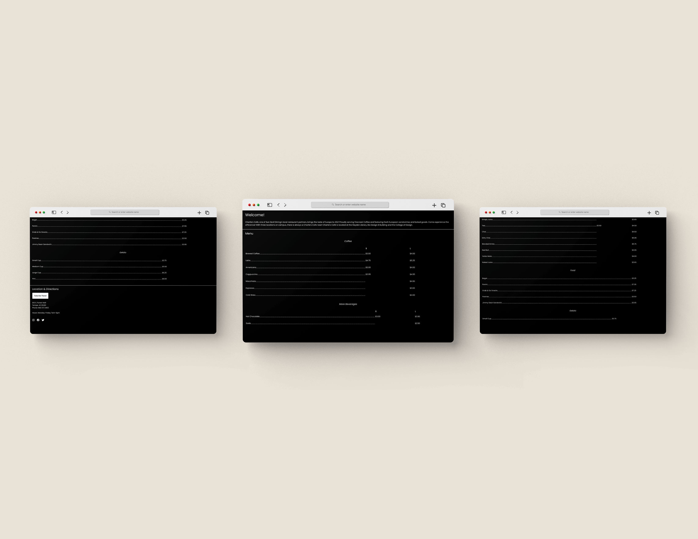
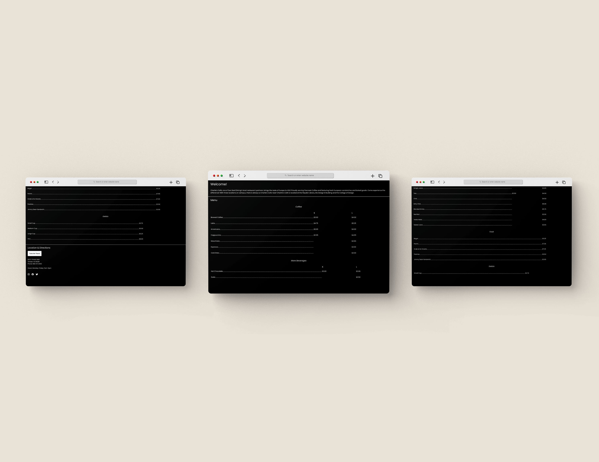
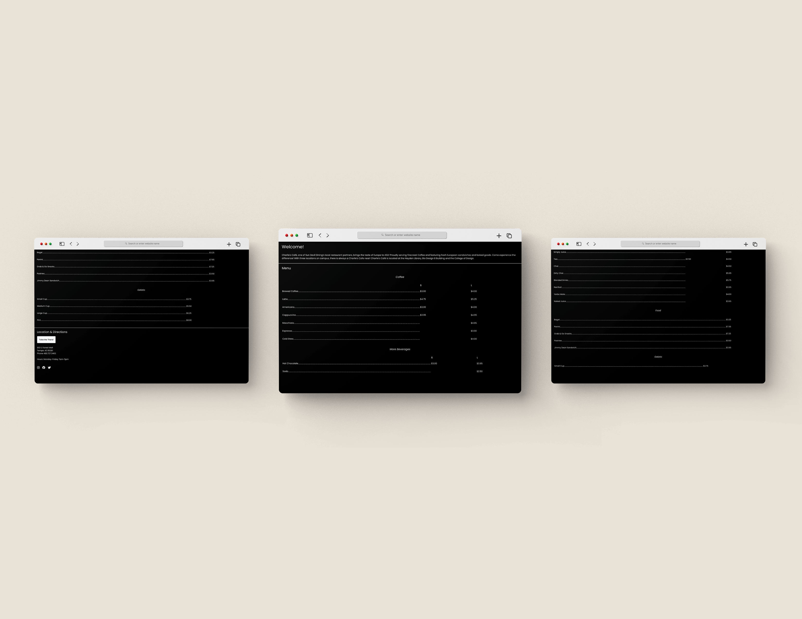

Charlie's is a single page coded site that I was assigned to do in VSCode. This was the first single page coded site that I created.

This maintenance app was created for an assignment that tasked us to create a multiple page app with function buttons and interactions. It is a responsive design for mobile applications and web use.
https://xd.adobe.com/view/7f109ce6-0852-4818-aef3-d60af5b58195-2a43/